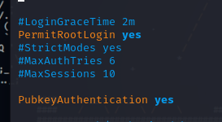
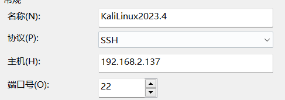
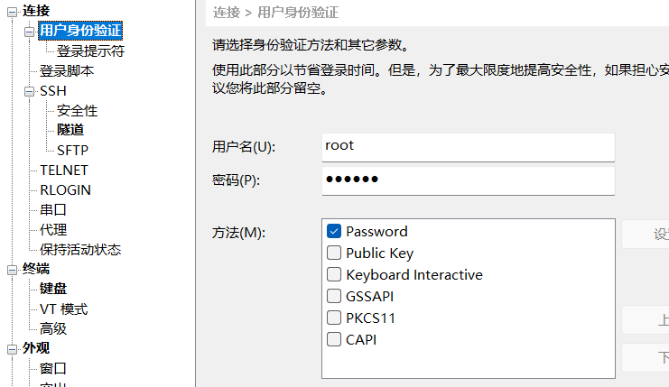
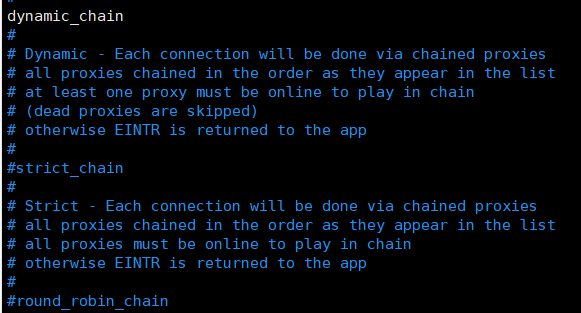
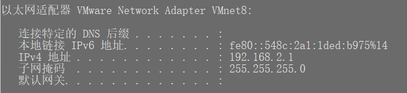
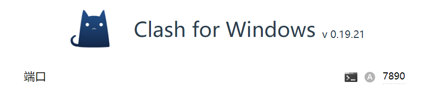

前言
起因是我的kali虚拟机突然崩溃了，查了很多资料也都是推荐重装，也没有很重要的东西，但一些基本配置还是需要的
至于下载安装网上教程很多，大部分都是跟着默认选项即可。
环境配置
ssh连接
大部分linux都是命令行模式较多，所以ssh连接也非常重要
编辑ssh配置文件
vim /etc/ssh/sshd_config
# 这里我使用的编辑器是vim 其他也可以
将PermitRootLogin后的内容改为yes并取消和PubkeyAuthentication前面的注释
重启ssh服务
/etc/init.d/ssh restartssh服务自启
update-rc.d ssh enablessh连接
首先使用ifconfig查看自己的IP地址，这里我使用的是Xshell

主机填写自己查询出来的IP，端口为22(linux一般默认都是22)

然后填写自己的用户密码连接
更换国内镜像源
由于某些原因，导致通过官方镜像源下载速度变慢，这时我们可以将源修改为国内的镜像源。这样做有很多好处，比如提高下载速度，提高稳定性，国内镜像源在国内访问更为顺畅，不容易出现网络波动导致的下载失败；减少延迟，访问本地镜像源可以有效减少网络延迟，提升系统更新和软件安装的效率。
编辑apt配置文件
sudo vim /etc/apt/sources.list替换国内源
注释掉官方源，挑选任意源加入即可
# 阿里云
deb http://mirrors.aliyun.com/kali kali-rolling main non-free contrib
deb-src http://mirrors.aliyun.com/kali kali-rolling main non-free contrib
# 清华大学
deb http://mirrors.tuna.tsinghua.edu.cn/kali kali-rolling main contrib non-free
deb-src https://mirrors.tuna.tsinghua.edu.cn/kali kali-rolling main contrib non-free
# 中科大
deb http://mirrors.ustc.edu.cn/kali kali-rolling main non-free contrib
deb-src http://mirrors.ustc.edu.cn/kali kali-rolling main non-free contrib
更新
apt update # 更新源
apt upgrade # 测试镜像源安装输入法
这里以ibus输入法为例
安装输入法框架
sudo apt-get install ibus ibus-pinyin然后重启
sudo reboot然后配置ibus添加中文即可
配置代理
Kali中内置了ProxyChains开源代理工具，通过使用这个工具，可以让我们隐藏真实ip实现攻击、代理上网等
使用ProxyChains，用户可以在Kali Linux中配置不同类型的代理服务器，包括HTTP、SOCKS4和SOCKS5代理。此外，用户还可以为不同的目标指定不同的代理服务器，以确保他们的行为不被检测到或跟踪。
编辑配置文件
vim /etc/proxychains4.conf
注释strict_chain
取消dynamic_chain的注释
然后移至最后一行，填写对应IP和端口
我这里使用的是clash for Windows，虚拟机采用NAT连接
首先在Windows cmd下ipconfig，查询NAT模式的IP


socks4 192.168.2.1 7890